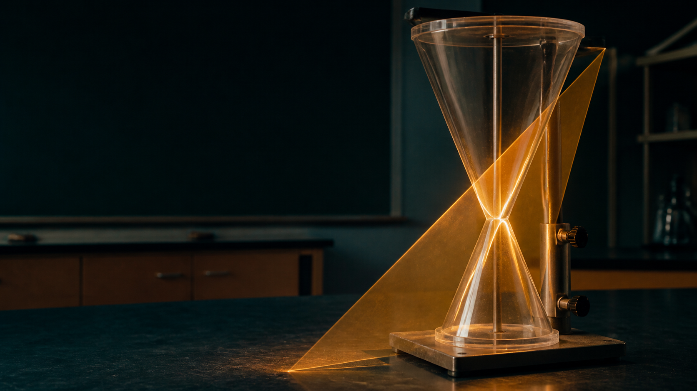
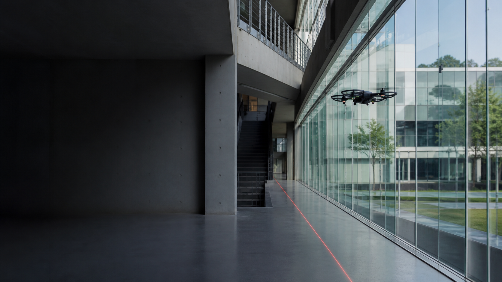

기하 · 탐구 설계 시각화 01
평면을 기울이면
곡선의 정체가 바뀐다.
“절단평면의 각도를 바꾸면 원뿔의 단면은 어떻게 달라질까?”
발문 답변에서 잡은 핵심운영실에서 학생을 선택하면 이 자리에 해당 학생의 실제 질문과 답변 근거가 표시됩니다.

기하 · 탐구 설계 시각화 01
“절단평면의 각도를 바꾸면 원뿔의 단면은 어떻게 달라질까?”
미적분Ⅰ · 탐구 설계 시각화 02
“속도의 부호를 고려한 누적과 전체 이동량의 누적은 무엇이 다를까?”

기하 · 탐구 설계 시각화 03
“방향벡터와 법선벡터로 직선과 평면의 위치 관계를 어떻게 판정할까?”